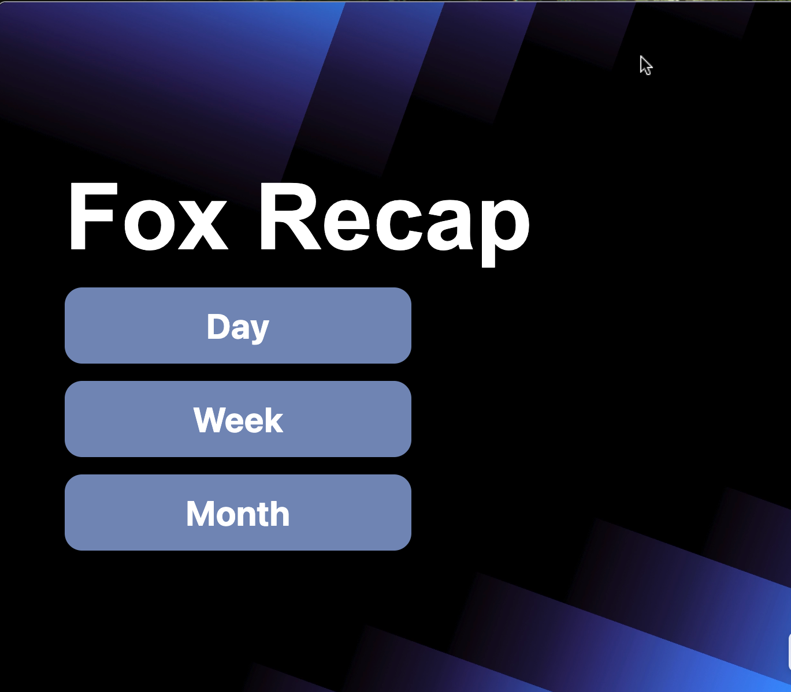
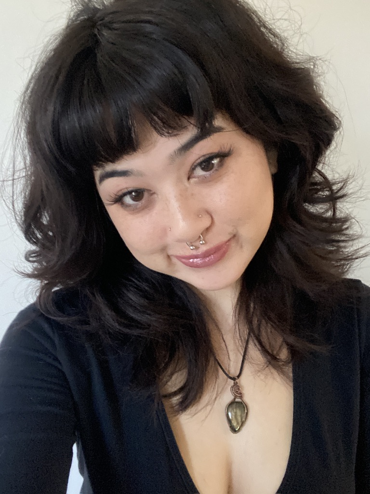
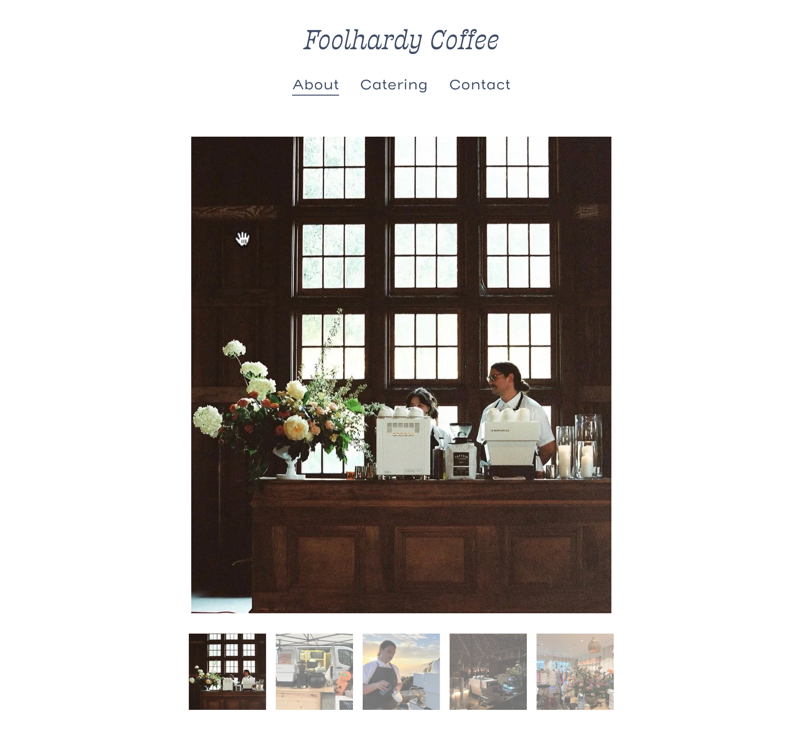
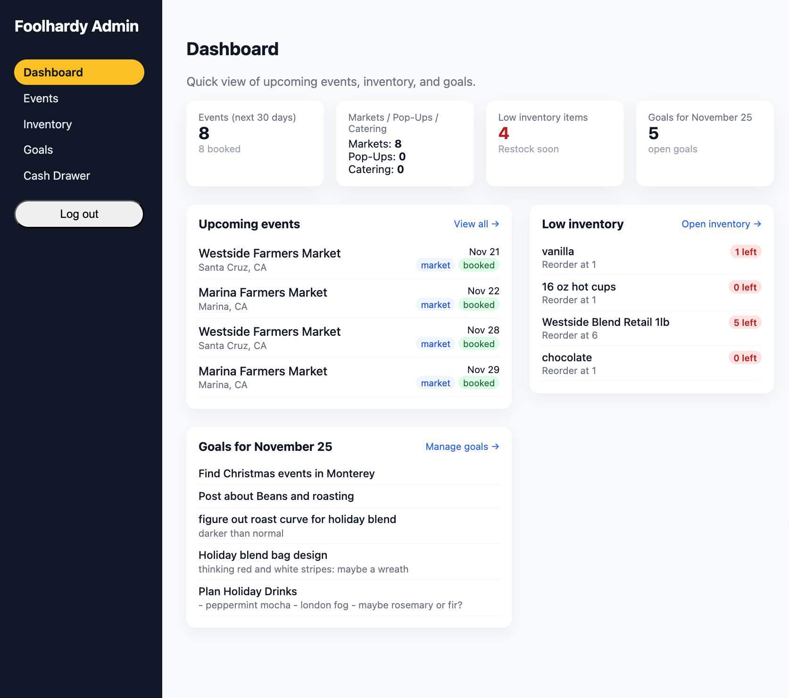
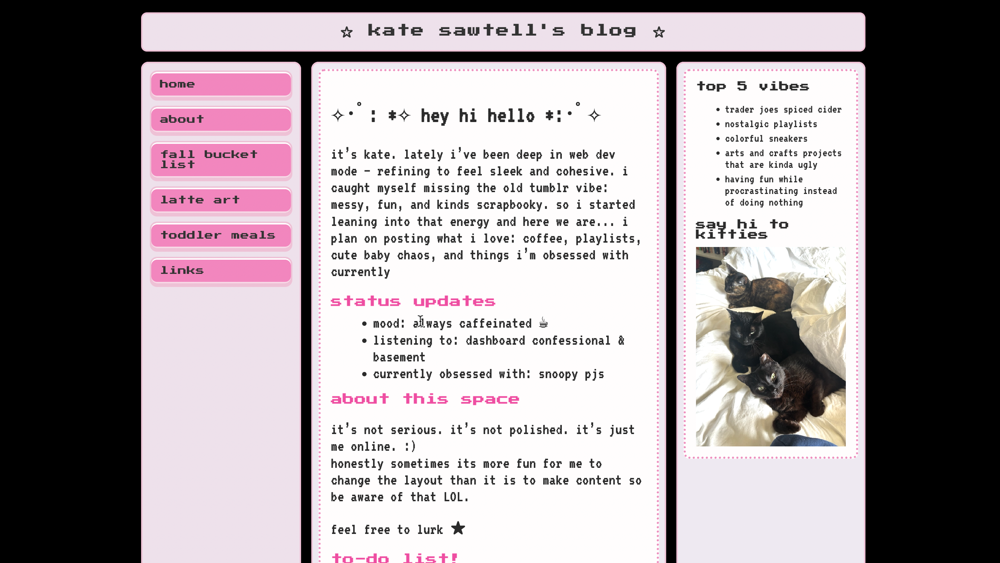
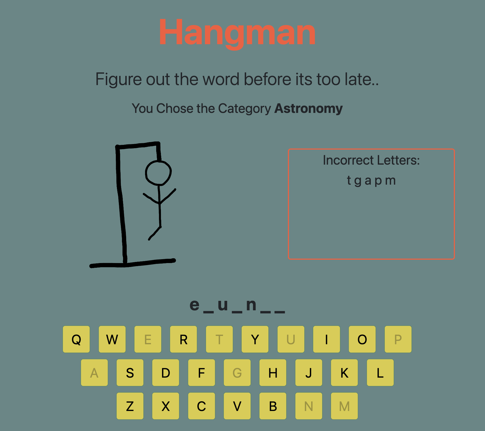

I build clean, reliable, and accessible websites that balance usability and performance. My work combines the structure of software engineering with the creativity of front‑end development.
a bit about me

I’m a CS grad focused on web development. As a software engineer, I enjoy bringing ideas to life through clean, maintainable code — from intuitive front‑end interfaces to reliable back‑end logic. My goal is to build web experiences that feel effortless to use.
Outside of code, me and my boyfriend run Foolhardy Coffee — a mobile coffee catering business. It’s a mix of community, creativity, and caffeine that keeps me inspired both in and out of tech.
Before computer science, I studied social science and environmental resource management. The intersection of people, behavior, and the world we live in — still shapes the way I work. It pushed me toward building tech that feels thoughtful, accessible, and considerate of the communities it serves.
CSU Monterey Bay — B.S. Computer Science (Software Engineering), GPA 3.89
San Jose City College — A.A. Social & Behavioral Science; A.A. Arts & Humanities, GPA 3.90
De Anza College — CA Environmental Resource Management & Pollution Prevention (certificate), GPA 3.92


Co‑founded brand. I built and maintain the website and handle design for packaging.

I created a custom internal admin dashboard using Vite, React, and Supabase for streamlined event scheduling, inventory tracking, and business operations.


An early JavaScript project with hand‑drawn animations and multiple categories. This was one of my first projects for my Internet Programming class- which I later TA'ed for